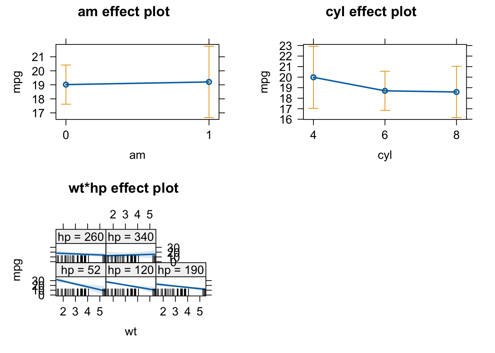

library(effects)
## Loading required package: carData
## lattice theme set by effectsTheme()
## See ?effectsTheme for details.
library(MuMIn)11 Exercise - Multiple Linear Regression
| Formula | Meaning | Details |
|---|---|---|
y~x_1 |
\(y=a_0 +a_1*x_1\) | Slope+Intercept |
y~x_1 - 1 |
\(y=a_1*x_1\) | Slope, no intercept |
y~I(x_1^2) |
\(y=a_0 + a_1*(x_1^2)\) | Quadratic effect |
y~x_1+x_2 |
\(y=a_0+a_1*x_1+a_2*x_2\) | Multiple linear regression (two variables) |
y~x_1:x_2 |
\(y=a_0+a_1*(x_1*x_2)\) | Interaction between x1 and x2 |
y~x_1*x_2 |
\(y=a_0+a_1*(x_1*x_2)+a_2*x_1+a_3*x_2\) | Interaction and main effects |
In this exercise you will:
- perform multiple linear regressions
- interpret regression output and check the residuals
- plot model predictions including interactions
Before you start, remember to clean your global environment (if you haven’t already) using rm(list=ls()).
To conduct the exercise, please load the following packages:
You will work with the following datasets:
- mtcars
- Cement{MuMIn}
The second dataset is from the MuMIn package (as shown by the curly brackets).
11.0.1 Useful functions
for multiple linear regression
lm() - fit linear model
summary(fit) - apply to fitted model object to display regression table
plot(fit) - plot residuals for model validation
anova(fit) - apply type I ANOVA (variables included sequentially) to model to test for effects all levels of a factor
Anova(fit) - car package; use type II ANOVA (effects for predictors when all other predictors are already included) for overall effects
scale() - scale variable
sqrt() - square-root
log() - calculates natural logarithm
plot(allEffects(fit)) - apply to fitted model object to plot marginal effect; effects package
par() - change graphical parameters
use oldpar \<- par(mfrow = c(number_rows, number_cols)) to change figure layout including more than 1 plot per figure
use par(oldpar) to reset graphic parameter
for model selection
stepAIC(fullModel) - perform stepwise AIC model selection; apply to full model object, MASS package
dredge(fullModel) - perform global model selection, MuMIn package
model.avg() - perform model averaging
AIC(fit) - get AIC for a fitted model
anova(fit1, fit2) - compare two fitted models via Likelihood Ratio Test (LRT)
11.1 Analyzing the mtcars dataset
Imagine a start up company wants to rebuild a car with a nice retro look from the 70ies. The car should be modern though, meaning the fuel consumption should be as low as possible. They’ve discovered the mtcars dataset with all the necessary measurements and they’ve somehow heard about you and your R skills and asked you for help. And of course you promised to help, kind as you are.
The company wants you to find out which of the following characteristics affects the fuel consumption measured in miles per gallon (mpg). Lower values for mpg thus reflect a higher fuel consumption. The company wants you to include the following variables into your analysis:
- number of cylinders (
cyl) - weight (
wt) - horsepower (
hp) - whether the car is driven manually or with automatic (
am)
In addition, Pawl, one of the founders of the company suggested that the effect of weight (wt) might be irrelevant for powerful cars (high hp values). You are thus asked to test for this interaction in your analysis as well.
Solution
This is the code that you need to interpret the results.
# change am and cyl from numeric to factor
mtcars$am <- as.factor(mtcars$am)
mtcars$cyl <- as.factor(mtcars$cyl)
# multiple linear regression and results:
# (we need to scale (standardize) the predictors wt and hp, since we include their interaction)
carsfit <- lm(mpg ~ am + cyl + scale(wt) * scale(hp), dat = mtcars)
# weight is included as the first predictor in order to have
# it as the grouping factor in the allEffects plot
summary(carsfit)
##
## Call:
## lm(formula = mpg ~ am + cyl + scale(wt) * scale(hp), data = mtcars)
##
## Residuals:
## Min 1Q Median 3Q Max
## -3.4121 -1.6789 -0.4446 1.3752 4.4338
##
## Coefficients:
## Estimate Std. Error t value Pr(>|t|)
## (Intercept) 19.9064 1.5362 12.958 1.36e-12 ***
## am1 0.1898 1.4909 0.127 0.899740
## cyl6 -1.2818 1.5291 -0.838 0.409813
## cyl8 -1.3942 2.1563 -0.647 0.523803
## scale(wt) -3.6248 0.9665 -3.750 0.000938 ***
## scale(hp) -1.8602 0.8881 -2.095 0.046503 *
## scale(wt):scale(hp) 1.5631 0.7027 2.224 0.035383 *
## ---
## Signif. codes: 0 '***' 0.001 '**' 0.01 '*' 0.05 '.' 0.1 ' ' 1
##
## Residual standard error: 2.246 on 25 degrees of freedom
## Multiple R-squared: 0.888, Adjusted R-squared: 0.8612
## F-statistic: 33.05 on 6 and 25 DF, p-value: 1.021e-10
# The first level of each factor is used as a reference, i.e. in this case a manual gear shift with 4 gears.
# From the coefficient cyl6 we see that there is no significant difference in fuel consumption (= our response) between 4 gears (the reference) and 6 gears.
# In contrast, the predictors weight (wt) and horsepower (hp) have a significant negative effect on the range (mpg), so that they both increase fuel consumption.
# check residuals
old.par = par(mfrow = c(2, 2))
plot(carsfit)
par(old.par)
# plot effects
plot(allEffects(carsfit))
## Warning in Analyze.model(focal.predictors, mod, xlevels, default.levels, : the
## predictors scale(wt), scale(hp) are one-column matrices that were converted to
## vectors
## Warning in Analyze.model(focal.predictors, mod, xlevels, default.levels, : the
## predictors scale(wt), scale(hp) are one-column matrices that were converted to
## vectors
## Warning in Analyze.model(focal.predictors, mod, xlevels, default.levels, : the
## predictors scale(wt), scale(hp) are one-column matrices that were converted to
## vectors
# We can see in the wt*hp plot, that for high values of hp wt has no effect on the response mpg. We conclude that Pawl was right.11.2 Model-selection with the Cement dataset
The process of cement hardening involves exogenous chemical reactions and thus produces heat. The amount of heat produced by the cement depends on the mixture of its constituents. The Cement dataset includes heat measurements for different types of cement that consist of different relative amounts of calcium aluminate (X1), tricalcium silicate (X2), tetracalcium alumino ferrite (X3) and dicalcium silicate (X4). A cement producing company wants to optimize the composition of its product and wants to know, which of these compounds are mainly responsible for heat production.
Warning
We only do a model selection here for educational reasons. For your analysis, and if your goal is not a predictive model, think about the model structure before you do the analysis and then stick to it! See here the section about p-hacking (and also consider that AIC selection will/can remove confounders which will violate causality and can lead to spurious correlations!